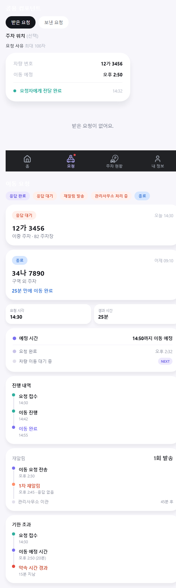
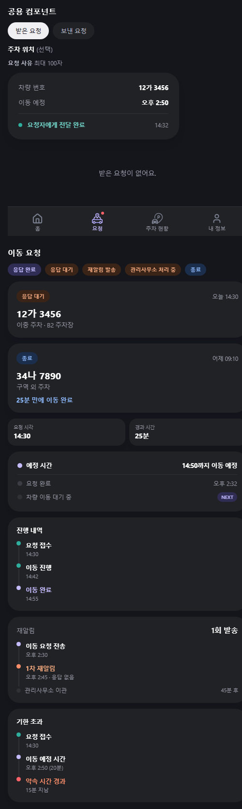

같은 미리보기 화면(/dev/design-system)을 작업 전 코드와 작업 후 코드로 찍었다. 폭 500px, 웹.
고정 스타일이 기기 모드를 따르지 않는다. 화면은 라이트로 남고, 스스로 배경을 칠하는 하단 탭만 어두워진다.

테마를 따르는 제목만 흰 글자 → 안 보임 하단 탭만 어두움 같은 이유로 안 보임같은 토큰 이름이 다크 값으로 풀린다. 카드는 그림자 대신 바탕보다 밝은 면(background.raised)으로 높이를 나타낸다.
